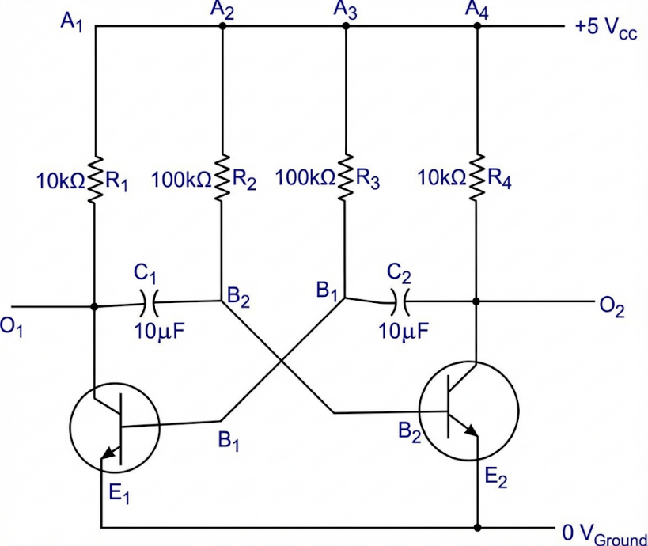
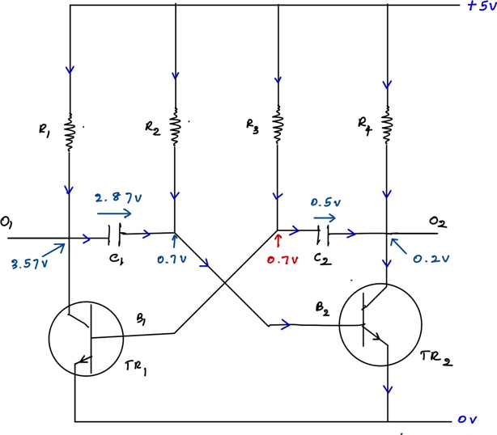
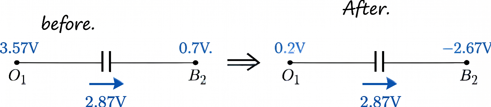
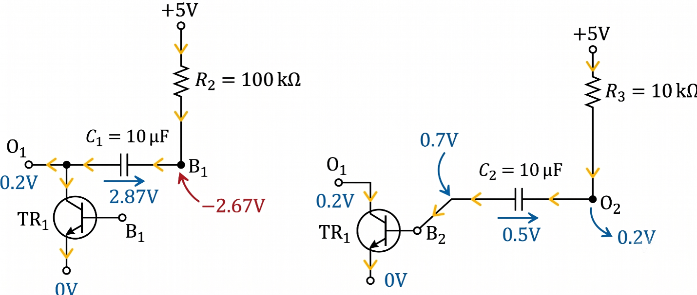
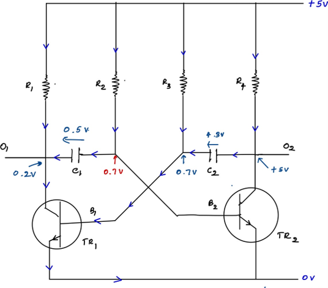
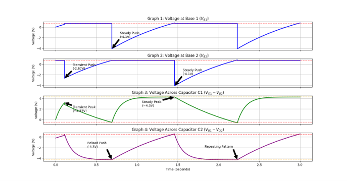
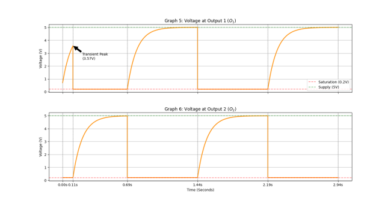

The Astable Multivibrator: A Complete Circuit Analysis
A step-by-step analysis from initial startup through steady-state oscillation, with full mathematical derivations.
Contents
- Introduction
- 1. Circuit Overview
- 2. Fundamental Requirements for Current Flow
- 3. NPN Transistor Operation in This Circuit
- 4. Initial Conditions: Understanding the Pull-Up Resistor
- 5. Initial Stage: TR2 Activates First
- 6. Node Voltage Analysis
- 7. Timing Calculations — First Half-Cycle
- 8. The Flipping Process
- 9. Reverse Charging Phase
- 10. Full Oscillation and Steady-State Operation
- 11. Square Wave Output
- 12. Calculating the Oscillation Frequency
- 13. Why Different Resistor Values Are Used
- 14. The Classic $t = 0.693 \times R \times C$ Formula — Explained
- Conclusion
Introduction
This article provides a detailed walkthrough of how an astable multivibrator circuit operates. We will examine the circuit's behavior from the initial startup phase through to steady-state oscillation, supported by step-by-step mathematical analysis. By the end, you will have a thorough understanding of the voltage dynamics, timing calculations, and the principles behind the square wave output.
1. Circuit Overview
The following circuit diagram shows how the system is implemented. When all the components are assembled, as shown in the figure, we have a 5V source voltage. Let's get an idea about the working flow of this circuit.

2. Fundamental Requirements for Current Flow
We know that there are three requirements for current to flow through a path:
- The path needs to be continuous (a loop).
- There needs to be a voltage difference.
- The path needs to have a resistance.
3. NPN Transistor Operation in This Circuit
We know that an NPN transistor starts to work when we forward-bias the base-emitter junction and reverse-bias the collector-emitter junction. When the transistor is in active mode, it has a 0.7V drop from the base to the emitter.

As shown in the picture, we have two paths for the current to flow. Even if we say that both transistors are identical, one will always activate at a slightly lower voltage than the other. Therefore, keeping that in mind, assume the TR2 transistor is activated first.
4. Initial Conditions: Understanding the Pull-Up Resistor
Before all of this happens, we must carefully investigate the voltages of some crucial points in this circuit. The point $O_1$ and $O_2$ voltages are around 5V (HIGH). The $R_1$ resistor acts as a pull-up resistor. When the transistor is OFF, the $O_1$ is 'floating'; if we leave it without a resistor, it can fluctuate randomly. Therefore, by adding a resistor, when no current is flowing, the full 5V is pulled toward the output end—that is why we call it a pull-up resistor.
5. Initial Stage: TR2 Activates First
Now think TR2 is activated. Then, two main things happen in the circuit. (These are not the only paths that were created; we take only these two because they are the heart of this circuit.)
Two CR charging paths are created when TR2 is activated.
5.1 C2 Charging Path
C2 starts to charge through the C2 charging path:
A current starts to flow through $R_3$, $C_2$, and then through the TR2 transistor to ground. When a transistor is in active mode, the collector-emitter voltage is around 0.2V.
5.2 C1 Charging Path
C1 starts to charge through the C1 charging path:
After TR2 activation, it creates a small base-emitter current flow. Then the $C_1$ capacitor will start charging through the $C_1$ path as shown in the following:

6. Node Voltage Analysis
For a moment, let's look at the voltages at the $O_1$ and $O_2$ points first, because it will help us understand the flipping process.
6.1 Point O₂
The TR2 transistor is enabled and we have a 0.2V difference between the collector-emitter junction. Because the emitter is at 0V, we can say the $O_2$ point is at 0.2V.
6.2 Point O₁
This is a point most people get confused about. We are at the initial stage of this circuit. The above image shows that the $O_2$ point is at the $C_2$ path. The voltage of that specific point rises along with the capacitor voltage. Most people think it rises suddenly like a full square wave, but that is not the actual scenario. Let's break it down carefully.
If we closely look at the circuit, we can observe that when point $B_1$ reaches 0.7V, TR1 will be activated. Let's determine how long the $B_1$ point takes to rise to 0.7V.
$B_1$ voltage rises along with the voltage across the $C_2$ capacitor. So, when the voltage across the $C_2$ capacitor becomes 0.5V, the $B_1$ point becomes 0.7V. Therefore, we can calculate that time using the RC circuit charging equation we built in the previous article. (Here we can also use the general equation, but we will use the one we derived for charging.)
7. Timing Calculations — First Half-Cycle
7.1 Time for TR1 to Activate
The RC circuit charging equation is:
Where $V_C(t) = 0.5$V, $V_K = +4.8$V, $R = 100$kΩ, and $C = 10\mu$F. Applying those to the equation:
So, this tells us that the $C_2$ capacitor takes around 0.11 seconds to charge up to 0.5V. When the voltage across $C_2$ reaches 0.5V, the base voltage of TR1 becomes 0.7V, causing TR1 to activate.
7.2 C1 Voltage at the Moment TR1 Activates
Before looking into that, let's look at what happened to the $C_1$ capacitor during that time (0.11 s).
Let's calculate the voltage across the $C_1$ capacitor after that time period. Where $V_K = +4.3$V, $R = 10$kΩ, $C = 10\mu$F, and $t = 0.11$ s. Applying those to the equation:
Since the voltage across $C_1$ is 2.87V, we can calculate the $O_1$ point voltage as:
Because this is an RC circuit, the voltage rises gradually, not suddenly. Even though $C_2$ needs to charge up to the full voltage, it stops its journey because TR1 is enabled. Let's analyze the flipping process carefully, because this is where most people get confused.
8. The Flipping Process
A moment before the circuit starts to reverse, the voltages distribute as follows:

So, at this point, the process starts to reverse. Once the capacitor $C_2$ charges enough for the base of TR1 to reach its barrier voltage of 0.7V, TR1 finally activates. Let's carefully look at what happens next.
8.1 Voltage Drop at O₁
As a result of TR1 activation, the $O_1$ point voltage suddenly drops to 0.2V. When the transistor is in active mode, it creates a current flow from the collector to the emitter, and the voltage between the collector and emitter will be around 0.2V.
8.2 Capacitor Coupling
This is the point where the confusion happens. You have observed that point $O_1$ was at 3.57V a moment before TR1 is activated, and suddenly it drops to 0.2V. After one end of the capacitor drops like that, the voltage across the capacitor does not change instantaneously. It remains unchanged. To balance this, the other end of the capacitor will drop by the same amount. This is called capacitor coupling. Let's look at what the voltage value will be after this incident.
The dropped amount is:
Then the voltage of the other plate of the capacitor (the $B_2$ point):

8.3 The Switch — TR2 Turns Off
Because the base of TR2 is now going below its barrier voltage, TR2 instantly shuts off.
You might think that when TR2 turns off, the $O_2$ point will instantly snap to 5V and trigger capacitive coupling here too. But that is not what happens! Because the $B_1$ point is firmly anchored at 0.7V, it cannot be pushed around like $B_2$. Because of this anchor, the $O_2$ point cannot rise instantly. It must change gradually.
9. Reverse Charging Phase
Now the active transistors have changed and the capacitors' charging paths are instantly reversed. $C_1$ has around 2.87V and $C_2$ has around 0.5V when the capacitors begin to charge through new paths. The paths are shown as follows:

We assume the direction of the voltage drops is positive from left to right.
I have marked the $B_1$ point voltage in red, which is the voltage after capacitor coupling. Now the circuit starts charging the capacitor in the reverse direction. When point $B_2$ reaches 0.7V again, TR2 will reach its barrier voltage and the circuit will flip again. That tells us we have time until the $C_1$ capacitor charges from 2.87V to −0.5V (the minus sign is because of the direction) for the next flip. During that time period, $C_2$ will also charge. Let's mathematically calculate how much time it will take for $C_1$ to charge up to −0.5V.
9.1 Timing for the Next Flip
Same as before, the process has reversed. Now the $B_2$ point needs to reach 0.7V. Let's calculate how much time it takes to reach 0.7V.
Applying the general RC equation to Path 1:
Where $V_K = -4.8$V, $V_{AH} = 2.87$V, $V_C(t) = -0.5$V, and $RC = 1$ s:
9.2 C2 Charging During This Phase
Now $C_1$ is giving time for $C_2$ to charge through $R_4$. Let's calculate how much time it takes for $C_2$ to reach its final voltage using the time constant.
There are two main cases. First, the voltage across $C_2$ needs to come to 0V, and then rise to its full voltage. (Here we cannot find exactly how much time it takes to fully charge; we will approximate that time using the time constant. We learned this in the first article; you can go back to it from here.)
Time for $C_2$ to go from 0.5V to 0V. Applying the general equation, where $V_K = -4.7$V, $V_{AH} = 0.5$V, $V_C(t) = 0$V, and $RC = 0.1$:
And we know that in an RC circuit, a capacitor takes approximately 5 time constants to reach the source voltage. We can find the time constant ($\tau$) using:
Therefore, we can say the $C_2$ capacitor takes around 0.51s total time to reach its final voltage of 4.3V.
What we did here was approximate the time it will take to charge to the full voltage. But we can also calculate the final voltage it actually reaches using the general equation. Where $V_K = -4.3$V, $V_{AH} = 0.5$V, $t = 0.58$s, and $RC = 0.1$:
Therefore, during that time, the voltage across the $C_2$ capacitor becomes almost 4.3V. When the voltage across TR2 becomes 4.3V, the $O_2$ point also becomes 5V, and $O_1$ remains at 0.2V until the second flip happens.
The initial stage has ended; from here the circuit will start its full oscillation. Let's dive into that next.
10. Full Oscillation and Steady-State Operation
Let's look at how the voltage across the circuit looks the moment before the second flip.

So, as we discussed before, the same thing happens here. TR2 will be enabled again. Then, the $O_2$ point voltage drops to 0.2V, causing capacitive coupling. TR1 will be turned off because of capacitive coupling, causing an instantaneous drop of the $B_1$ barrier voltage.
But now the voltage levels are different. Let's analyze them. The voltage a moment before TR2 is enabled is shown in the above image. After TR2 is enabled, the $O_2$ point voltage drops to 0.2V. Then, as a result of capacitor coupling, the $B_1$ point voltage drops by the same amount.
Voltage drop at the $O_2$ point:
Therefore, the $B_1$ voltage becomes:

Because of this, TR1 is disabled and the capacitor charging paths and directions change again. Now $C_2$ will charge from −4.3V to 0.5V. When it reaches 0.5V, the circuit will flip again, and this process continues repeatedly. So, let's calculate how much time it takes for the next flip to happen. To do that, we calculate the time it takes for $C_2$ to change its voltage from −4.3V to 0.5V.
Using the general equation, where $V_K = 4.8$V, $V_{AH} = -4.3$V, $V_C(t) = 0.5$V, and $RC = 1$ s:
So, during that time, $C_1$ will charge from −0.5V to 4.3V of its full voltage; it takes around 0.51s. So $C_1$ reaches its full capacity before the flip happens. After this point, the same pattern will occur repeatedly. We can see this pattern in the following graphs.

This image shows our calculations and the story of this circuit from the beginning. 'Transient' means the initial stage we discussed. Afterwards, the circuit becomes stable.
11. Square Wave Output
So, how this circuit creates square waves is the final goal of this circuit. The following graph shows how the $O_1$ point voltage behaves while the above changes happen.

So, this is the square wave. It is not a perfectly square shape, because the $O_1$ and $O_2$ point voltages rise along with the capacitors. Those capacitors do not change voltage instantaneously; it happens gradually. That is the reason for the curved shape of this square wave.
12. Calculating the Oscillation Frequency
Now we can calculate the approximate value of the frequency of this wave.
The circuit stabilizes after time 0.69s. Until then, it stays at the transition stage. So, after that, the full cycle is completed from 0.69s to 2.19s according to the graph.
Time Period ($T$):
Frequency ($f$):
So, keep in mind that this is an approximation of the frequency. If you build an actual circuit, this can change slightly.
13. Why Different Resistor Values Are Used
If you observed each flip in the circuit, the two RC paths had 10kΩ and 100kΩ resistors but the same capacitance. Another thing is that every time, the capacitor in the lower-resistor path reaches its maximum voltage before the other one reaches the barrier (flipping) voltage level. That is a necessity of this circuit. The faster it reaches the full voltage level, the more perfect the square wave will be.
We can explain it mathematically: the charging time is dependent on the time constant of that specific RC circuit. If we apply this to the two RC paths, the path with 100kΩ has a time constant of 1, and the path with 10kΩ has a time constant of 0.1. So, the one with the lower time constant charges faster than the other. That is why we are using two different resistors for this.
14. The Classic $t = 0.693 \times R \times C$ Formula — Explained
You may have seen in some sources and textbooks the equation:
This is used to get the half time of the time period; it was calculated based on some assumptions.
We calculated how much time $C_2$ takes to rise from −4.3V to 0.5V as before. Using the general equation, where $V_K = 4.8$V, $V_{AH} = -4.3$V, $V_C(t) = 0.5$V, and $RC = 1$ s:
On the other hand, this is the time taken to change the state of the $O_1$ and $O_2$ points. Therefore, this can be taken as the half-time period.
The three assumptions textbooks make are:
Assumption 1 — The Starting Point
They assume the voltage was pushed down to exactly $-V_{CC}$ (e.g., −5V). In our equation, we used the starting voltage as −4.3V, but they assume it will be totally pulled down to exactly −5V, without considering the transistor saturation drop of 0.7V.
Assumption 2 — The Target
The resistor is pulling the capacitor toward $+V_{CC}$ (+5V). In our example, we consider the collector-emitter voltage drop, but in here, they assume that voltage is smaller compared to 5V.
Assumption 3 — The Threshold
They assume the 0.7V switching point is so small compared to the 5V supply that we can treat it as 0V. Then the voltage across the capacitor becomes 0V when it switches.
So, after these assumptions, if we apply them to the same equation we used, where $V_K = 5$V, $V_{AH} = -5$V, and $V_C(t) = 0$V:
Conclusion
The astable multivibrator is one of the most elegant and self-sustaining circuits in electronics. As we have traced every voltage swing, charging path, and timing calculation throughout this analysis, several key principles stand out.
Self-Oscillation Through Feedback: The circuit does not require any external triggering signal. The mutual feedback between the two transistors and the RC networks creates a perpetual, alternating switching action. Each transistor's state directly controls the other's, making the circuit inherently self-sustaining.
RC Time Constants Govern Frequency: The oscillation frequency is entirely determined by the RC time constants of the two charging paths. As our calculations demonstrated, the path with the higher resistance (100kΩ) holds the timing of the half-cycle, while the path with the lower resistance (10kΩ) reaches its target voltage well before the flip occurs. This asymmetric design is essential for producing a clean, stable output waveform.
Capacitor Coupling Is the Heart of the Switching: The concept of capacitor coupling—where a rapid voltage change at one end of a capacitor is instantly reflected at the other end—is the mechanism that drives every state transition in this circuit. Understanding this behavior is key to understanding any multivibrator or similar switching topology.
The Transient Stage vs. Steady State: Our analysis revealed that the circuit begins with an initial transient phase before settling into a predictable, repetitive oscillation. During the transient stage, the voltage levels differ from those in steady-state operation, which is why applying steady-state formulas to the transient phase leads to inaccuracies.
Approximations vs. Exact Analysis: The classic formula $t = 0.693 \times R \times C$ offers a quick estimation of the half-period, but it rests on three simplifying assumptions: a starting voltage of exactly $-V_{CC}$, a target of exactly $+V_{CC}$, and a switching threshold approximated as 0V. In a real circuit, transistor saturation voltages and barrier voltages introduce deviations, which is why our detailed, equation-based approach yields more accurate results than the simplified formula.
The astable multivibrator serves as a foundational circuit in electronics, finding use in timing applications, LED flashers, clock signal generation, and pulse-width modulation (PWM) systems. The mathematical framework developed here— particularly the RC charging and discharging equations—forms the basis for analyzing a wide class of analog and digital timing circuits.
By building an actual circuit and comparing the measured frequency with the theoretical value calculated in this article, you will observe the limitations of both the exact and simplified models in the presence of real-world component tolerances, parasitic capacitances, and transistor non-idealities. That hands-on comparison is, ultimately, where theoretical understanding becomes practical engineering skill.